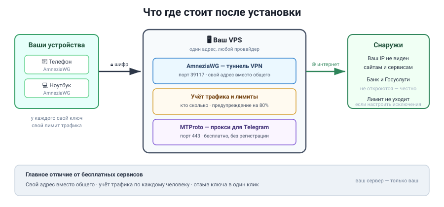
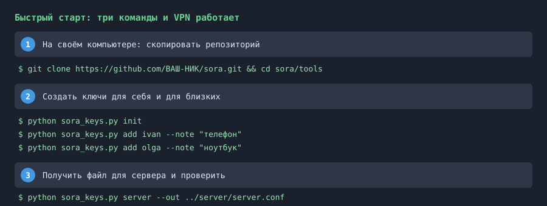

Поднимите VPN, которым владеете только вы. Свой адрес вместо общего, учёт трафика по каждому человеку, отзыв ключа в один клик.
Миллионы людей выходят с одного адреса. Сайты это видят и режут скорость, показывают капчу, отказывают в доступе. Ваш адрес — только ваш.
Пользуясь чужим VPN, ваш трафик идёт через чужой сервер. Владелец технически может видеть, куда вы ходите. Своим сервером вы эту возможность убираете.
Вы видите, кто сколько скачал, и ставите лимиты сами. Один человек не съест канал для всех остальных.

Ваш телефон и ноутбук со своими ключами → шифрованный туннель → ваш VPS → интернет. Сайты видят адрес сервера, а не ваш домашний.
Если вы умеете открыть терминал и вставить строку — этого достаточно. Полная инструкция, если нет, — в курсе.

В терминале на своём компьютере:
git clone https://github.com/petrles444-source/SORA.git
cd SORA/toolsПо одному ключу на устройство. Имена — любые, это подписи:
python sora_keys.py init
python sora_keys.py add ivan --note "телефон"
python sora_keys.py add olga --note "ноутбук"Появится server/server.conf — его передаёте на
сервер и запускаете установщик:
python sora_keys.py server --out ../server/server.conf
scp server/server.conf root@ВАШ_АДРЕС:/etc/sora/server.confНа своём компьютере:
python sora_doctor.pyНа сервере:
sora-selftest.shОжидаемый вид — строки [ OK ]. Если где-то
[ ОШИБКА ], идите дальше только после исправления.
Это самый важный шаг для удобства. Без него российские сайты тормозят, а банк не открывается совсем.
В приложении AmneziaVPN: Настройки → Параметры маршрутизации → Разделить трафик. Включите «Исключить заблокированные адреса» и впишите:
geoip:RU
geoip:SUПодробно — модуль 7 курса.
Практический курс · 39 страниц · можно распечатать
Курс написан для человека, который открыл терминал первый раз. Каждая команда дана текстом, для каждой написано, как понять, что она отработала. Если всё равно непонятно — скормите вывод ошибки любой нейросети, это работает лучше поиска.
Инструкция и курс — бесплатно. Платите только за VPS-сервер: от 128 ₽ в месяц. Больше ничего не нужно: ни подписки, ни домена, ни платных ключей.
Нет. Прокси и VPN работают по IP-адресу. Домен нужен только если вы захотите поднять WEB-прокси для Telegram — это необязательный бонус.
Можно поставить рядом. Ваш текущий никуда не денется, а новый будет отдельным ключом на отдельном устройстве. Так удобнее: старый для работы, новый для себя.
Да. Установка VPN на собственном сервере — обычная настройка собственного оборудования. Ничего не запрещено ни в чём.
Начните с sora_doctor.py на своём компьютере и
sora-selftest.sh на сервере. Оба скажут, что сломано, и
дадут готовую команду. Если их вывода не хватит — задайте вопрос в
Issues на GitHub или спросите нейросеть.
Скачайте курс, пройдите модуль 1 и поставьте сервер. Первый подключённый телефон — через пятнадцать минут.